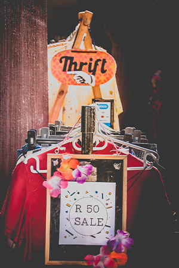
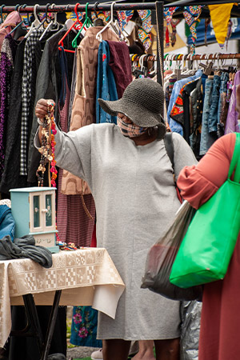
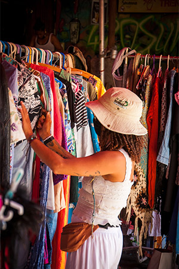
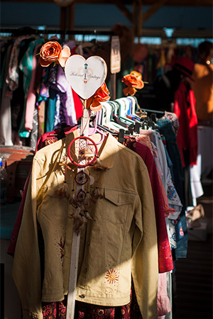
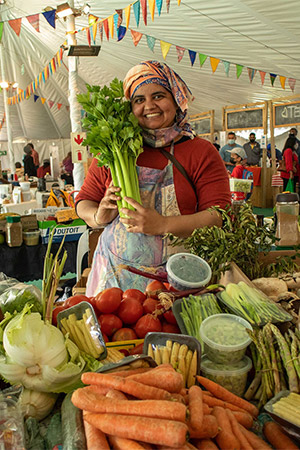
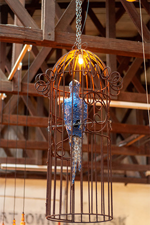

The Monthly Novalis Thrift Fest

When:
SATURDAY, 26 MARCH 2022 FROM 10:30 - 15:00
Where:
The Novalis Ubuntu Institute
Details:
- We are Officially taking in applications for the Monthly Novalis Thrift Fest 2022
- Email thriftfest123@gmail.com if you are interested in participating as a vendor.
- Please note: Stall spaces are limited.
- Regular stall (2m x 1.3m) Inside - R230 (Just the space)
- Gazebo stall (3m x 3m) Outside - R340 (Just the space)
- Trestle hire (optional) R65
- Anything handmade, second hand and new may be sold as long as it is legal.
-
Anyone can join - you don't have to be a vintage dealer or have done a market before to trade. Perfect opportunity to turn good quality items into CASH as well as decluttering your
home.
- Entrance is R10 to the market, R5 for kids under 12 years.
- Make sure to invite your friends and family, to carpool and to bring CASH as there is no ATM on the facility
- All Covid-19 protocols will be followed.
The Monthly Obs-fficial Thrift Fest

When:
SATURDAY, 2 APRIL 2022 FROM 09:30-14:30
Where:
Observatory Community Centre
Details:
- We are OBS-FICIALLY taking in applications for the APRIL Observatory community Hall Thrift Fest.
- If you are interested in participating as a vendor - Please email thriftfest123@gmail.com
- We have 60 stalls available. Some inside, some outside.
- Regular stall (2 m x 1.6m) Inside - R190
- Gazebo stall (3m x3m space) Outside (Bring your own Gazebo) R280
- Anything Second Hand, hand made or new may be sold as long as it is legal.
- 1 x sorted plastic BLACK BAG bag of recycling = 1 x Free entrance.
- Entrance is R10 (R5 for kids under 12 years)
- There is a play ground for the kids and lots of vendors to shop from. Great tunes to listen to, delicious food on sale and a general great vibe.
- All Covid-19 protocols will be followed.
The Monthly Trenchtown Thrift Fest

When:
SUNDAY, 20 MARCH 2022 FROM 13:30-18:00
Where:
Trenchtown
Details:
- Please note we only have 15 stalls available - So second hand will be limited to allow more space for festival wear, accessories, art and Handmade products.
- If you are interested in participating please email thriftfest123@gmail.com
- REGULAR stall (1.9 m x 1.3m) R250
- Gazebo stall (3m x 3m) R315
- Trestle hire (optional)
- Entrance is R5 for customers.
- Think groovy tunes, art, cocktails, Thrift stalls, festival gear, golden pineapples and pink flamingos - join us on SUNDAY the 20th March.
- DJ on the decks playing tropical beats
- 500ml Beer R25
- Large Pizzas are only R80.
- Double Jack Daniels R40.
- Double Southern Comfort R30.
- Double Vodka and Red Bull R50.
- Please make sure to bring CASH, material shopping bags and friends
- All Covid-19 protocols will be followed.
The Monthly Brass Bell Thrift Fest

When:
WEDNESDAY, 30 MARCH 2022 FROM 16:00-21:00
Where:
The Brass Bell
Details:
- We are taking applications for vendors, first come first serve. Stalls are very LIMITED!
- If you are interested in participating, please email thriftfest123@gmail.com
- Stalls are R250 ( 2m x 1.5m)
- We have Trestle hire available for R65.
- Entrance is FREE for customers.
- We are so excited to be introducing another adventure - The monthly Thrift fest at The Brass Bell!
- Shop Thrift, hand made, art and craft - whilst enjoying food and drink specials The good old Bell has to offer.
- Make sure to bring friends, family and material shopping bags
- All Covid-19 protocols will be followed.
The Monthly Vegan Goods Thrift Market

When:
SUNDAY, 27 MARCH 2022 FROM 10:00-15:00
Where:
The Range, Tokai
Details:
- The Vegan Goods Market and The Thrift Fest will be bringing you the ULTIMATE sustainable market experience on SUNDAY, 27th MARCH, 2022, at The Range, Tokai! Entry is FREE 💚
-
Get your groceries, good food, drinks as well as home and body products from a wonderful variety of small businesses that are excited to share their cruelty-free products and services
with YOU. Then when you thought the sustainable experience was over, you pop over to the log cabin to shop from a curated selection of goods, thrift and hand made right next door to
our market!
- A WIDE variety of delicious vegan food & beverages (sweet AND savory).
- Local, handcrafted & cruelty-free home & body products.
- Lots of shade and seating.
- Ample parking facilities.
- Play stations and games for the kiddies - all supervised.
- A bar with vegan-friendly wines and beers.
- Beautiful views of the surrounding mountains and vineyards.
- Animal adoption + fostering opportunities.
- Last but not least, ALL THE GOOD VAAAAARBZZZ
- All Covid-19 protocols will be followed.
The Monthly Blue Bird Thrift Market

When:
WEDNESDAY, 6 APRIL 2022 FROM 15:30-21:00
Where:
Blue Bird Garage Food and Goods Market
Details:
- We are officially taking in applications for the Blue Bird Garage and Thrift Fest collaboration right here in Muizenberg! We are super excited for this and want you to join us.
- If you are interested in participating, please email thriftfest123@gmail.com
- Think second hand, hand made and new products - super affordable but good quality.
- First come first serve. We are looking for 20 vendors to come trade.
- PLEASE NOTE: NO FOOD STALLS.
- Regular stall (2.5m x 2m) R290 - Includes a table.
- All stalls are inside.
- Entrance is FREE
- Make sure to bring CASH, material shopping bags, friends, family and good vibrations.
- All Covid-19 protocols will be followed.